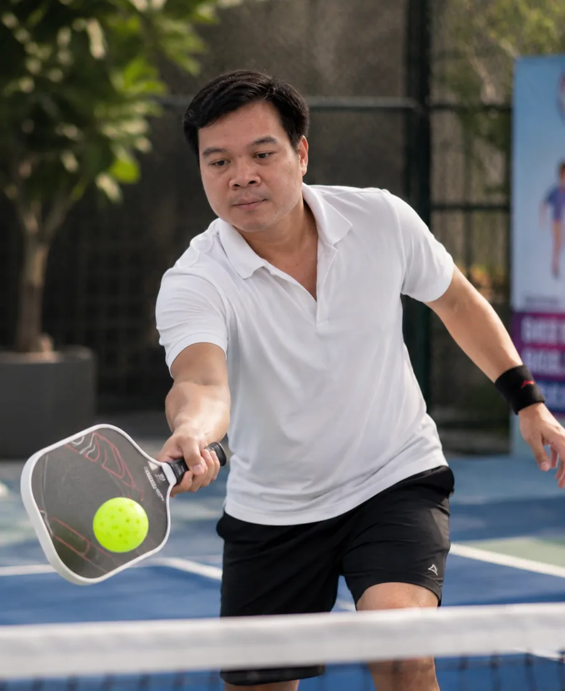

Người mới thường tìm huấn luyện viên bằng một câu hỏi đơn giản: “Ai đánh hay?”. Nhưng đánh hay và dạy hiệu quả là hai năng lực khác nhau. Một vận động viên có kỹ thuật tốt chưa chắc diễn giải được vì sao học viên đánh sai, còn một người dạy phù hợp phải quan sát được nguyên nhân, chia động tác thành bước nhỏ và điều chỉnh bài tập theo tốc độ tiếp thu của từng người.
Với hình thức 1 kèm 1, sự phù hợp càng quan trọng vì toàn bộ buổi học xoay quanh một học viên. Chọn đúng người giúp bạn xây nền nhanh hơn; chọn sai có thể khiến bạn lặp lại bài tập chung, tốn nhiều buổi nhưng vẫn không biết mình đang tiến bộ ở đâu.
1. Huấn luyện viên phải đánh giá trước khi đưa giáo án
Một lộ trình tốt nên bắt đầu bằng việc xem bạn đang ở đâu. Với người mới, huấn luyện viên cần kiểm tra khả năng phối hợp tay mắt, tư thế, grip, điểm chạm và cách di chuyển. Với người đã chơi, phần đánh giá nên đi vào những tình huống thường mất điểm như giao bóng, trả giao, bóng thứ ba, xử lý ở kitchen hoặc chuyển từ phòng thủ sang tấn công.
Nếu chưa quan sát mà đã khẳng định mọi học viên đều cần cùng một số buổi và cùng một giáo án, mức độ cá nhân hóa có thể chưa cao. Bạn nên hỏi rõ buổi đầu sẽ kiểm tra những gì và kết quả đánh giá được dùng thế nào để xây lộ trình.
2. Cách sửa lỗi phải cụ thể và dễ thực hiện
Những câu như “đánh nhẹ lại”, “đứng thấp xuống” hay “đừng vội” chưa đủ để người học thay đổi. Phản hồi tốt cần chỉ ra thời điểm, nguyên nhân và hành động thay thế. Ví dụ: thay vì chỉ nói mặt vợt mở, huấn luyện viên có thể cho bạn biết mặt vợt mở ở giai đoạn nào, do cổ tay hay do điểm chạm, rồi dùng một bài tập ngắn để kiểm tra lại.
| Phản hồi chung chung | Phản hồi có thể áp dụng |
|---|---|
| “Đánh bóng ổn định hơn.” | “Giữ điểm chạm trước hông và giảm biên độ vung ở 10 quả tiếp theo.” |
| “Di chuyển nhanh lên.” | “Tách bước nhỏ trước khi đối thủ chạm bóng, sau đó mới chọn hướng.” |
| “Đừng đánh bóng cao.” | “Hạ trọng tâm, giữ mặt vợt ổn định và đưa bóng qua lưới bằng chân thay vì hất cổ tay.” |
3. Bài tập phải liên quan đến lỗi và tình huống thi đấu
Feeding bóng đều giúp học kỹ thuật, nhưng buổi học không nên dừng ở việc đánh hàng trăm quả từ một vị trí cố định. Sau khi động tác ổn hơn, bài tập cần tăng dần biến số: bóng ngắn và dài, di chuyển trước khi đánh, đổi hướng, đưa ra quyết định và cuối cùng là tình huống tính điểm.
Bạn có thể hỏi huấn luyện viên: “Sau khi tập kỹ thuật, mình sẽ đưa kỹ thuật đó vào tình huống chơi thật như thế nào?”. Câu trả lời rõ ràng cho thấy người dạy có kế hoạch nối từ bài tập sang thi đấu, thay vì chỉ kéo dài số lần lặp.
4. Có tiêu chí đo tiến bộ thay vì chỉ dựa vào cảm giác
Tiến bộ trong Pickleball không chỉ là đánh mạnh hơn. Với người mới, mốc tốt có thể là giao bóng hợp lệ ổn định, giữ rally lâu hơn và vào đúng vị trí sau mỗi cú đánh. Với người đã chơi, tiêu chí có thể là giảm số bóng tự đánh hỏng, tăng tỷ lệ trả giao sâu hoặc thực hiện đúng lựa chọn trong một tình huống cụ thể.
- Có mục tiêu cho từng giai đoạn hoặc từng 2–4 buổi.
- Có bài kiểm tra lặp lại để so sánh cùng điều kiện.
- Có video hoặc ghi chú ngắn để học viên biết cần tự tập gì.
- Có điều chỉnh giáo án khi một bài tập không còn phù hợp.
5. Kinh nghiệm phải phù hợp với mục tiêu của bạn
Người mới cần huấn luyện viên kiên nhẫn, giỏi xây nền và biết giảm độ khó. Người muốn thi đấu cần thêm kinh nghiệm chiến thuật, quản lý điểm số, phối hợp đánh đôi và xử lý áp lực. Người chuyển từ tennis hoặc cầu lông lại cần người hiểu các thói quen dễ mang sang Pickleball, chẳng hạn biên độ vung quá lớn hoặc đứng quá xa kitchen.
Vì vậy, thay vì hỏi “thầy có giỏi không?”, hãy hỏi “thầy đã từng dạy người có điểm xuất phát và mục tiêu giống tôi chưa?”. Câu hỏi này sát với kết quả bạn cần hơn.
6. Lịch học, địa điểm và chính sách phải rõ ràng
Ngay cả huấn luyện viên phù hợp cũng khó tạo kết quả nếu lịch học thường xuyên bị gián đoạn. Trước khi đăng ký, bạn nên xác nhận khung giờ, địa điểm sân, cách tính phí sân, chính sách đổi lịch, thời hạn sử dụng gói và cách xử lý khi thời tiết không thuận lợi.
Người bận rộn nên chọn lịch có thể duy trì đều thay vì xếp nhiều buổi trong một tuần rồi nghỉ dài. Nhịp học ổn định giúp cơ thể ghi nhớ kỹ thuật tốt hơn và giúp huấn luyện viên theo dõi quá trình liên tục.
7. Học phí cần được đặt cạnh nội dung buổi học
Giá thấp hoặc cao chưa tự nói lên chất lượng. Hãy xem thời lượng huấn luyện trực tiếp, mức độ cá nhân hóa, phí sân, dụng cụ, video recap, bài tập tự luyện và hỗ trợ giữa các buổi. Một buổi 90 phút có đánh giá rõ và sửa đúng lỗi đôi khi có giá trị hơn nhiều buổi tập không có mục tiêu.
Bài học phí Pickleball 1 kèm 1 tại TP.HCM sẽ giúp bạn quy đổi các bảng giá về cùng tiêu chí để dễ so sánh hơn.
10 câu nên hỏi trước khi đăng ký
- Buổi đầu sẽ đánh giá những kỹ thuật và tình huống nào?
- Lộ trình được cá nhân hóa dựa trên kết quả nào?
- Mục tiêu thực tế sau 4, 8 hoặc 16 buổi là gì?
- Buổi học gồm bao nhiêu phút huấn luyện trực tiếp?
- Phí sân và dụng cụ đã nằm trong học phí chưa?
- Có video hoặc bài tập tự luyện sau buổi không?
- Khi học viên chưa làm được, giáo án được điều chỉnh thế nào?
- Có phần thực chiến hoặc bài tập ra quyết định không?
- Chính sách đổi lịch và bảo lưu gói ra sao?
- Có thể học một buổi đánh giá trước khi mua gói dài không?
Nên học thử trước khi quyết định gói dài
Một buổi trải nghiệm giúp bạn đánh giá tốc độ phản hồi, cách giải thích và cảm giác phối hợp. Sau buổi đó, bạn nên biết ít nhất ba điều: lỗi chính hiện tại là gì, bài tập nào cần ưu tiên và lộ trình tiếp theo được đề xuất dựa trên cơ sở nào.
Bạn cũng có thể đọc thêm bài học Pickleball 1 kèm 1 có hiệu quả không và học bao nhiêu buổi thì chơi được để đặt kỳ vọng thực tế trước khi đăng ký.
Đánh giá đầu vào cùng 5P
5P kiểm tra kỹ thuật, xác định ba lỗi ảnh hưởng lớn nhất và đề xuất lộ trình theo mục tiêu, lịch cá nhân và trình độ hiện tại.
Đặt lịch học thử